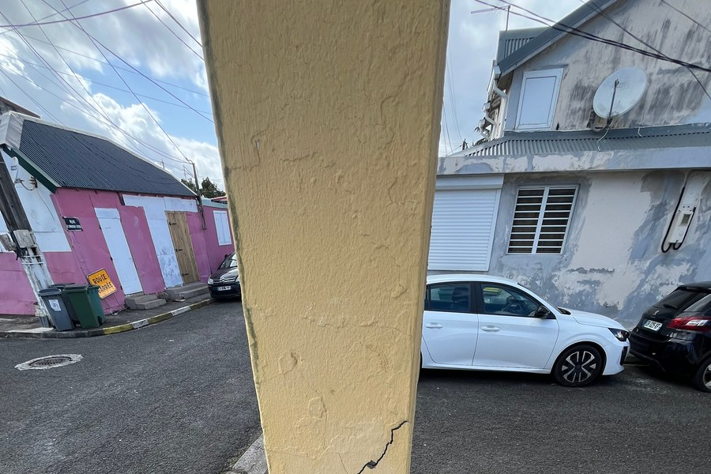

Observation
Fissure inclinée traversant un poteau béton armé au droit d'un nœud poutre-poteau. L'angle caractéristique et la continuité de la fissure sur la hauteur de l'élément sont des indicateurs à ne pas ignorer.
À investiguer
L'ouverture de fissure, la présence d'armatures apparentes et l'historique de l'ouvrage (séisme, surcharge, tassement) permettent d'orienter l'analyse et de statuer sur l'urgence d'une intervention.